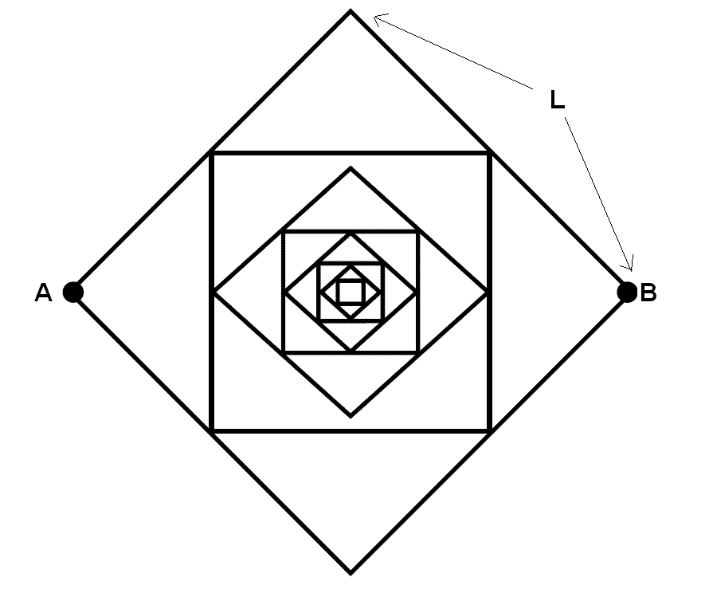

First, we begin with a square of side length L. Connect the centers of each side to form another square. Connect the centers
of each side of this square to form yet another square, and so on, to infinity. Suppose now that all the lines
in the diagram are uniform wires. Let the resistance of a piece of wire of the Length L (length of a side of the outer most square)
be exactly 1. Let the net resistance between the points A and B be R.
Compute the k-th digit after the decimal point of the value R. Namely, let
R=0.n1n2n3...nk...
Given k, output nk.

The input of each test cases is simply the value k (k<10000000 , 0 < min(k,990*104-k) < 104) on its own line.
For each input value, output the k-th digit of R on a single line.
2
4
6
9899898
5
9
8
4
Problem setter: Josh Bao
Alternative Solution: Mike Liu